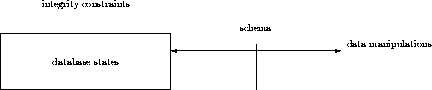

Next: The relational model
Up: Basic knowledge of
Previous: What is database
Let's move on to data models. These are abstructed models of the real
world from the view point of database. A data model usually comprises
the following three elements.
- Data structure
- defines basic elements and their relationship
of the real world information. The invariant parts of this
database structure are called schema and the variable parts
of it are called database states(sets of realized values).
- Data manipulations
- are definitions of possible manipulations
of data structures. There are two types of data manipulations,
one of which are definition operations on schema and the other
are manipulative operations on dataabase states.
- Integrity constraints
- are conditions which databases should
keep. There are two kinds of integrity constraints. The first
kind is about values of attributes, and the second is about
relationship among attributes.
These elements are shown in figure 1.

Figure 1: data model
Using Kappa, integrity constraints can be written in schema.
The schema can be thought as a logical or conceptual model of
database. Because Kappa places physical data automatically,
users except database administrators do not have to be concerned
with the physical or internal model. The primitive commands to
manipulate data are the interfaces to KLIC programs.